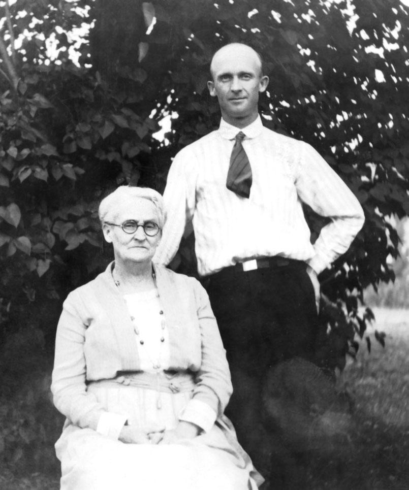

CAMPBELL COUSINS CORRESPONDENCE

* * * *
Photo of
Ada C. Crandall
Mahlon Crandall
Taken Summer 1923
* * * *
Osceola, Pa.,
October 7, 1923.
Dear Cousins:
This is a
beautiful October day.
We reached home from Mansfield [The Cousins Dinner that year was at the
home of Llewellyn & Mabel
Shipman Shaw-wbt], September 26th, all safe, after a
most enjoyable day. There were fourteen own Cousins present
with five absent. We miss the absent ones more and more each
year. The years seem shorter as they pass.
These times of greeting "with some of us"
will soon be over, so let us attend all of these Re‑unions and
write these Campbell Cousins Correspondence letters and get all
the pleasure out of life we can.
Cousin Ann
VanDusen is improving slowly and hopes to be able
to walk out before long.
We have had but very little rain here
this summer,‑ a good many wells are dry and others very low,
but there is no sickness at present, and we are hoping for a
good three days' rain before the winter.
I do not think of anything more of interest
so will close hoping the Cousins all keep well and happy.
With love to all,
- Report No. 2 - Page 18 -
(Mary Ann Campbell
Family)